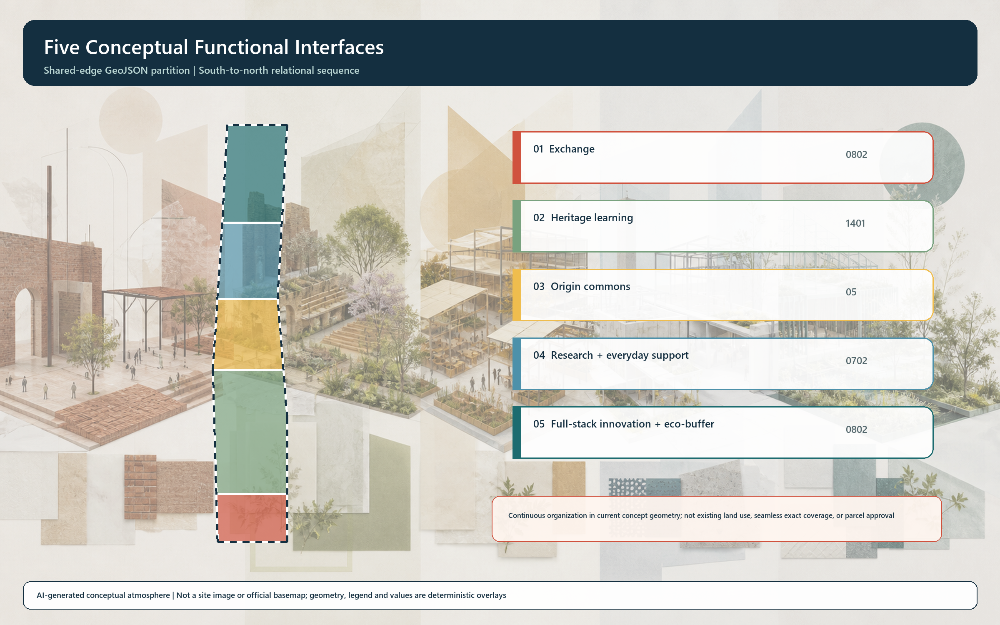
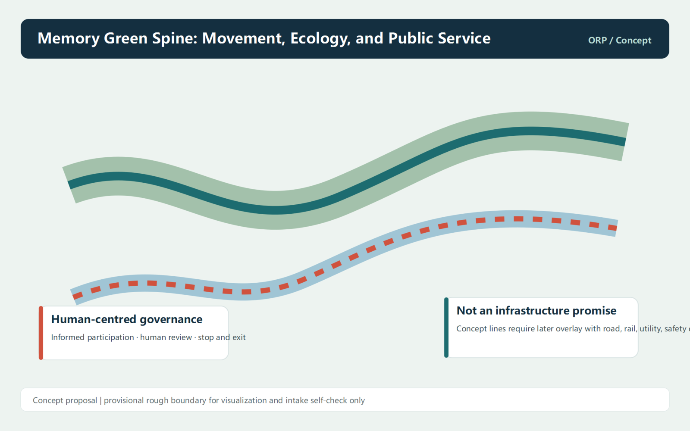

Coordinated research, overall design, and key areas form one transmission system.
This is an offline conceptual presentation. Provisional rough geometry is for visualization, intake self-check, and design discussion only; it is not an official redline, approval basis, or precise-area conclusion.
Overview

Zhongzhiyuan full-stack forge; AI Origin commons; Dazhongsi exchange hall.
Ten scenario cards, three bounded test directions, and five personas retain human review and exit mechanisms.
Land-use structure

Slow mobility and blue-green public realm

Buildings and renewal projects
Six concept footprints are not a survey, property finding, demolition decision, or new-build permission.
Public interfaces, Origin Community deliberation, then full-stack innovation and ecological buffering.
Core metrics
11.41 km²
25.7%
15.7%

Task coverage
All 17 announcement requirements and agent.1 through agent.6 are mapped in compliance_matrix.json to narrative, layers, metrics, drawings, HTML, sources, assumptions, and checks.
Self-check status
Local integrity review is complete; repository CI and professional review must still verify the PR.
Official geometry, controls, existing-condition, ownership, and engineering data remain pending; all spatial layers and metrics require recalculation.
Sources
- DATA-SRC-OFFICIAL-ANNOUNCEMENT-20260509
- DATA-SRC-AGENT-TASKBOOK-20260518
- DATA-SRC-PROVISIONAL-BOUNDARIES-20260605
- DATA-SRC-MOHURD-URBAN-DESIGN-MEASURES
Assumptions and data gaps
A-PROV-BOUNDARY-001, A-CONTROLS-001, A-EXISTING-001, A-GOVERNANCE-001, and A-IMPLEMENTATION-001 are recorded in assumptions.json; all spatial and operational propositions remain conceptual.
Offline static page. No CDN, remote font, map tile, script, iframe, form, API, or tracking code.